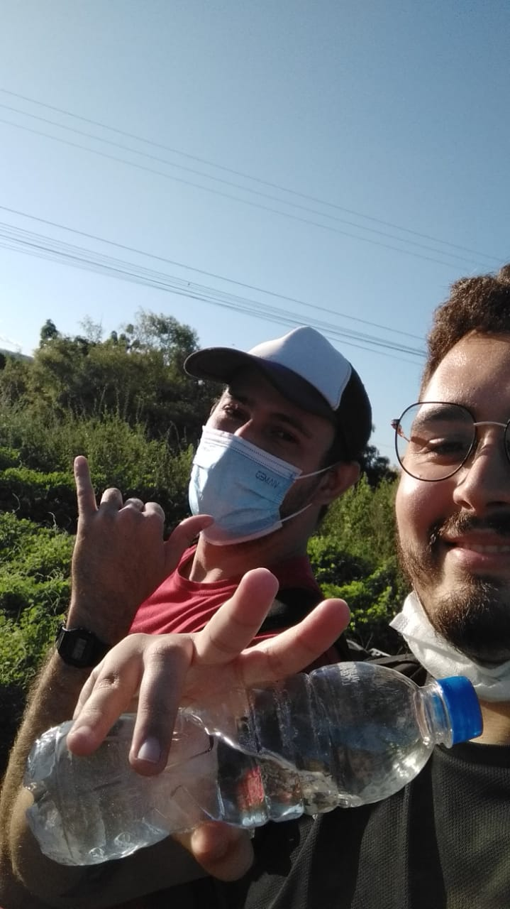
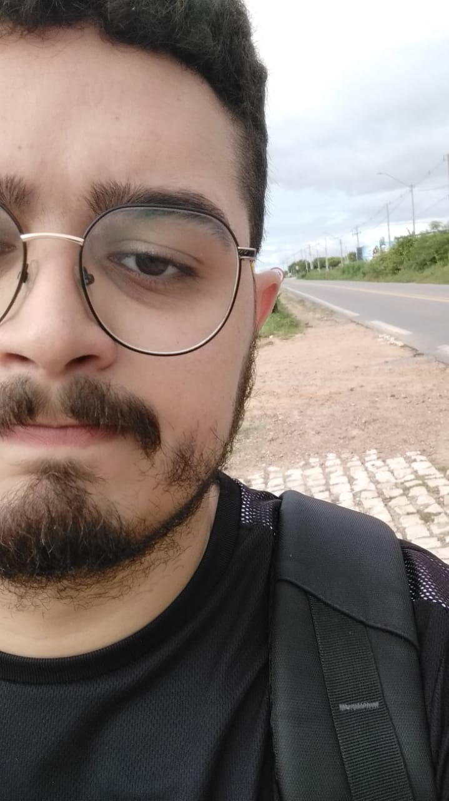

Try something new
A Logbook About Daily Walk
Follow me on this journey
üëáüòÅ
Previously Information About me :)
Hello! my name is Renan Andrade de Almeida, I'm 22 years old, currently I study ADS on IFRN, but before that I studied Chemistry on UERN in Mossoró/RN, after many events I came here and now I really study what I always wanted :D.
What happened for me to choose this challenge? I was very sedentary and also needed to save money, so linking business with pleasure I walk to home everyday after than class.
So let's walk?
Day one
Today I walked to home alone and it was just a normal day, the weather was nice.
Day two
While walked to home today, thinked about programmation and create some future projects, the weather was sunny, but not too hot.
Day three
Today I walked to home as usual, but I don't took none picture, on the way to my house I saw a little dead cat. üòû
Day four
Today I turned back to home later than usual, the weather was colder.
Day five
Today was a calm day so I started to think about how this project would be made and I decided to make a website as you are seeing, the weather was too sunny and hot. üò¨
Day six
Today I was walked to home, but don't alone, this time my friend Gustavo came with me, I don't took any photo is this day.

Day seven
Today we Walked to home, yes "we", me and my friend Gustavo üòÅ, now we have a picture walking together, today the weather was hot so, hydrate yourself!
Day eight
Today I wasn't feeling too good and the weather was too hot, but I continued the challenge.
Day nine
Today I Walked the whole way and almost don't remember to take a picture :D, but I remembed in the end.
Day ten
I was happy today, the way was calm as than usual.
Day eleven
Today I lost the bus to go to IFRN, but in general my day was good despite that, I had class of programmation and was cool!
Day twelve
Today I returned to home listening my favorite playlist, the way was short hahaha, the weather was very good.
Day thirteen
Today it rained on my way home, got myself a little wet.
Day fourteen
Today I walked as usual and on the way I went to the market to buy some things to my house, i don't took any picture too.
Day fifteen
Today the weather was cloudy, I walked as usual, and I thought how my life is more healthy than before this challenge, now I feel my body much better :D.
Day Sixteen
Today was hot and sunny, I feel like I lost two kilos walking in this heat hahaha.
Day seventeen
Today I went again to the market on the way to home, now I went to buy products to clean my shoes, today I wasn't with shoes, obviously.
Day eighteen
Today was a usual day, i walked to home and the weather was sunny, look my pic. üëáüòä
Day nineteen
Today I took my last pic walking because the deadline is coming!
Day twenty
Today, day 21 of june, is my last day to documentary this challenge, the deadline is in 2 days and I started programming the website :D.
Conclusion
The conclusion I came to is that this challenge was very beneficial for me, and I will continue it to try to improve my healthy and lifestyle.
THANK YOU ALL!!!